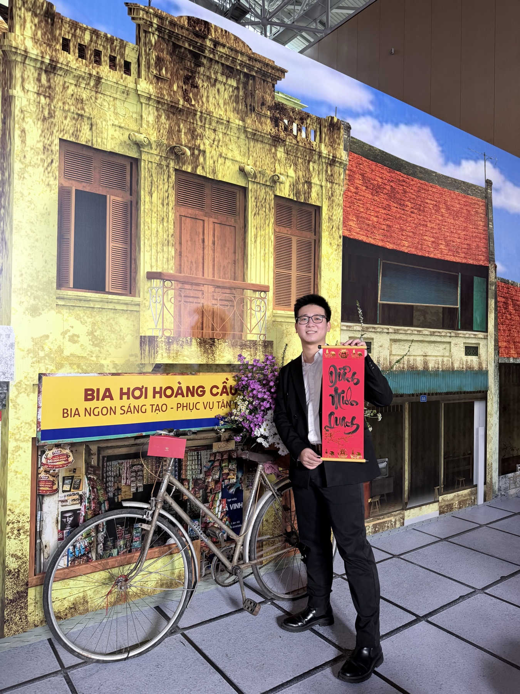

Banking eKYC
Platform
Biometric authentication and transaction verification services for domestic banks, with monitoring, reconciliation and operational access control.
- Java
- Spring Boot
- Next.js
- Oracle
Dương Minh Quang · Java Full-Stack Engineer
Five years engineering eKYC, secure transaction flows, AI agents and enterprise platforms—from API design to production operations.

A selection of enterprise products engineered across finance, identity and generative AI.
Biometric authentication and transaction verification services for domestic banks, with monitoring, reconciliation and operational access control.
End-to-end C06 identity verification integrating citizen ID and facial biometrics, with Kafka event synchronization and a high-volume reconciliation portal.
eKYC modules and partner integrations for certificate authorities, securities companies and non-bank financial organizations.
AI Agent operations portal where models generate SQL, while a governance layer validates execution, applies PostgreSQL Row-Level Security and enforces permissions for each individual Agent.
Message gateway connecting Facebook and Zalo to an AI core, with asynchronous event handling and conversation persistence.
Server-side APIs connecting chatbot SDK clients to Text-to-Speech and LLM services, with conversation data stored in MongoDB.
Document and chatbot platforms for healthcare, travel and the arts using semantic retrieval, vector indexing and Azure OpenAI streaming.
Re-engineered an existing Python system in Java Spring while preserving business logic and validating each function through incremental testing.
Recruitment platform for a Japanese client, covering requirements analysis, API and screen specifications, full-stack development and functional testing.
Complexity belongs inside the system.
Clarity belongs everywhere else.
Growing through production responsibility, enterprise scale and cross-functional delivery.
Enterprise eKYC and AI platforms for banks and financial institutions. Scalable services, distributed workflows and secure operational portals.
Java migrations, enterprise portals and Azure OpenAI products delivered for Japanese clients across multiple industries.
Recruitment platform development for Rikunabi with Java, Spring Boot, React, Next.js and TypeScript.
Digital media products for VOV using Java, Spring Boot, Drupal, PHP and modern frontend technologies.
Technology choices guided by reliability, security, throughput and the humans operating the system.
Java · Spring Boot · Node.js · NestJS · Python · Django
React · Next.js · Vue.js · TypeScript · JavaScript
Oracle · PostgreSQL · MongoDB · MySQL · SQL Server
Kafka · Redis · REST APIs · Event-driven systems · RLS
RAG · LLM · Azure OpenAI · AI Search · Vector Search
System integration · API design · JUnit · Docker · Agile
FSB — FPT School of Business & Technology
IN PROGRESSFPT University
COMPLETEDHave a challenging system, product or idea?
Let’s turn it into something dependable.